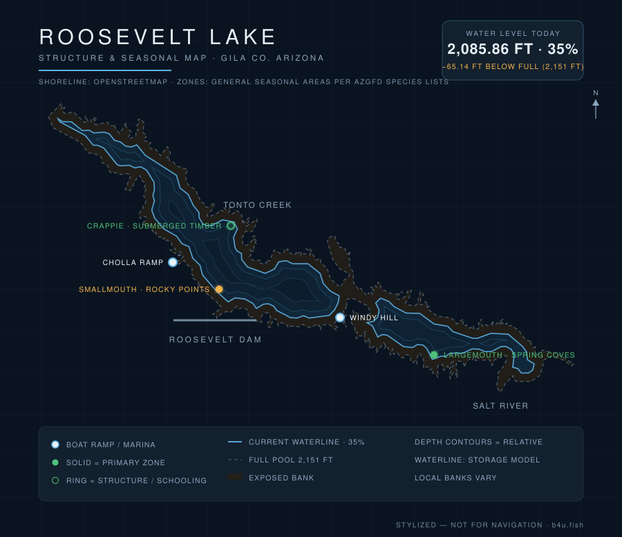

Theodore Roosevelt Lake is the largest reservoir on the Salt River and one of Arizona's best bass and crappie fisheries. Here's what to know before you launch — plus live conditions updated every day.

Waterline reflects the latest level reading (stylized — not for navigation). Fish zones are general seasonal areas, not exact spots, compiled from AZGFD species lists & lake guides and published Arizona fishing reports. Water data: SRP/DWR, CAP, USACE.
Current water level, percent-full, storage, weather, solunar bite windows, and a daily fishing score for Roosevelt are tracked on the b4u.fish dashboard.
Roosevelt sits at the top of the Salt River chain northeast of Phoenix, behind the historic Theodore Roosevelt Dam. As the biggest lake in the system it holds the most water and the most fishable shoreline — flats, creek arms, and standing structure that make it a destination for tournament and weekend anglers alike. Levels are managed by SRP and swing with runoff and irrigation demand.
Peak season. Bass push shallow to spawn and crappie stack in the brush — target creek arms and protected flats.
Fish low light and go deeper midday. Main-lake points and humps hold bass off the heat; the daily score on b4u.fish flags the workable windows.
Cooling water pulls bait shallow and fires up a reaction bite; winter smallmouth stay catchable on rock with slower presentations.
The b4u.fish dashboard combines moon phase, solunar major/minor windows, wind, cloud cover, water temperature, and barometric stability into a single daily score — so you can see at a glance whether today is worth the drive.
From Phoenix, the fastest route is SR-87 (Beeline Highway) to SR-188 south to the lake. You can also take US-60 east through Globe and SR-188 north. Plan on roughly two hours. The lake is in Tonto National Forest, so a Tonto Pass or day-use fee is required.
Full pool is about 2,151 ft. Live elevation, percent-full, and storage are on the b4u.fish dashboard, from the SRP/DWR daily report.
Largemouth and smallmouth bass, crappie, channel and flathead catfish, and sunfish.
Schoolhouse, Cholla, Windy Hill, and Bachelor Cove are the main ramps; availability depends on the water level — see the dashboard.
SR-87 to SR-188 south, or US-60 to Globe and SR-188 north — about two hours northeast.